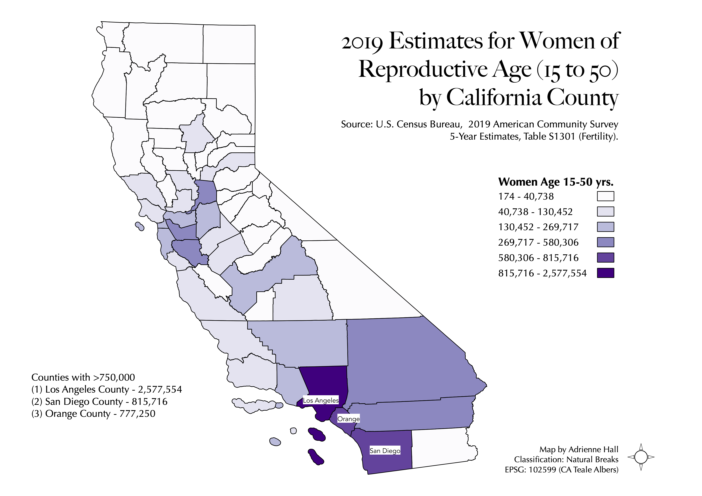
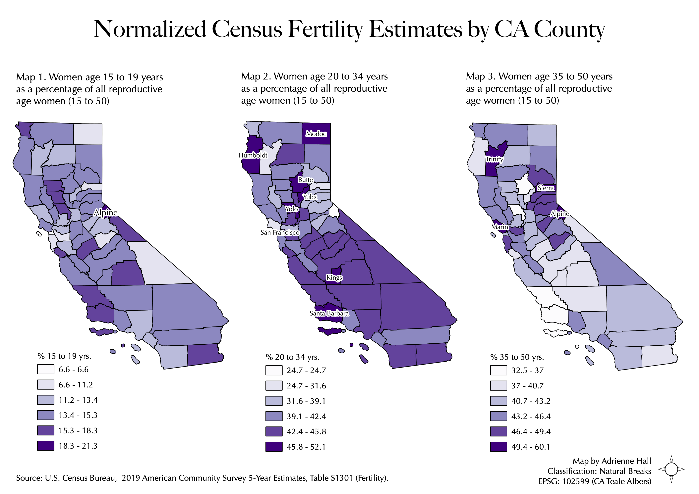

Homework 6 part 1: Census data choropleth
In this assignment students learn how to download tabular datpart1a from census.data.gov, clean csv data tables, and join tabular data to shapefile data in QGIS.

Data used for this project
Link to cleaned csv dataset on GitHub
Link to CA counties geoJSON on GitHub
Homework 6 part 2: Normalizing census data with ratios
In this assignment students learn how to normalize census data using ratios. Students are asked to create choropleths of the dataset using 3 different classification modes in QGIS.

Data used for this project
Link to cleaned csv dataset on GitHub
Link to CA counties geoJSON on GitHub